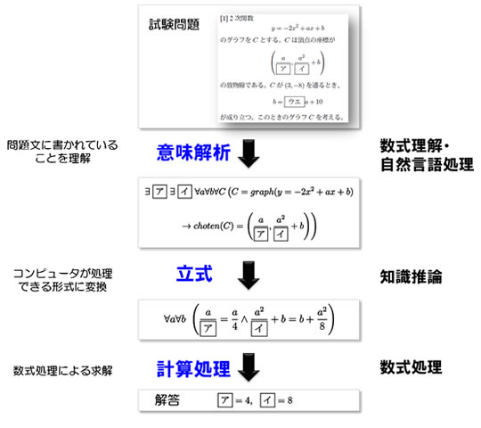

数学の入試問題をコンピュータが解くとは、人間にとって理解しやすい自然言語や数式で表現された問題文を、コンピュータが計算プログラムで実行可能な形式に変換し、プログラム（ソルバ）で問題を解くことです。そのためには以下の3つの手順が必要です(図2)：
- 意味解析：人間にとって理解しやすい自然言語や数式で表現された問題文を理解する。
- 立式：コンピュータが処理できる形式に変換する。
- 計算処理：数式処理ソルバで答えを求める。
人 間が理解するようにコンピュータが言葉を理解することは容易ではありません。自然言語処理によって導かれる問題文の意味表現を、コンピュータが処理できる 形式で立式を行うには、問題文の言語解析だけではなく、数学の用語や高校数学知識をうまく統合することが必須であり、また、与えられた問題に対してコン ピュータがどう解けばよいのか自ら判断することも求められます。立式ができた後にコンピュータで求解する部分については、大学入試2次試験の数学の問題に ついて数式処理技術を使ってもおおよそ5～6割しか解けないのが現状であり、計算アルゴリズムの高度化も重要です。
このように、各ステップにおいてさまざまな理論・技術の開発が必要であり、それらの技術を問題ごとに適切に組み合わせ繋いでいくことも必要になります。

図2 数学を解くための手順
「東ロボ」について、情報処理技術の観点から人間の知能に対するアプローチの一つとして取り組んでおり、「数学」入試問題で東大入試に合格できるレベルの技術を作ることを目的としています。
「東 ロボ」（数学）では、NIIと富士通研究所が共同で、問題文を認識・解釈しコンピュータが理解できるデータの形にする数式認識や、数式処理ソルバが理解で きる式表現を生成（立式）するための自然言語処理、立式された問題を高速に正確に解くための数式処理技術など、人間中心のITを実現するために必要な技術 の開発を行い、目標達成を目指します。本プロジェクトで開発された技術により、高度な数理解析技術が誰にでも容易に使えるようなものになることが期待され ます。
（2012年９月１０日付 国立情報学研究所・富士通研究所 共同プレスリリースより転載）